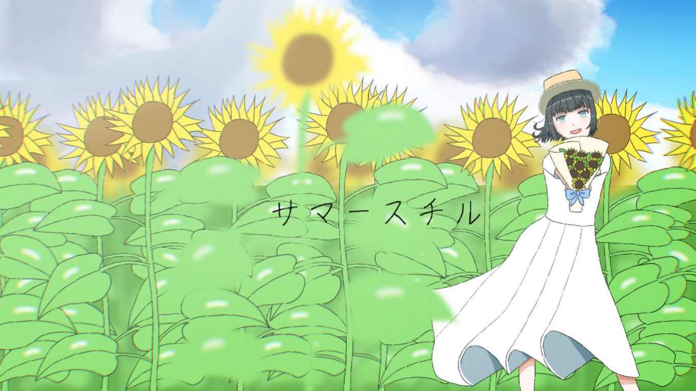

制作実績：Web

サマースチルさんのオフィシャルサイト（実案件）
ボカロＰのサマースチルさんのオフィシャルサイトです。利用規約をわかりやすくしてほしいとの要望で利用規約の見易さを意識しました。また、夏の昼間をイメージしました。
使用技術：HTML / CSS / JavaScript
▶ Webで開く
初めて作ったHTMLポートフォリオ
HTML・CSS・JavaScriptを使って制作した、私の最初のポートフォリオサイトです。 レイアウトや配色に悩みながらも、ハンバーガーメニューなどの簡単なアニメーション実装にも挑戦しました。
使用技術：HTML / CSS / JavaScript
▶ Webで開く百均レビュー投稿アプリ
ログイン機能付きのレビュー投稿サイトをFlaskで制作しました。ユーザー登録・ログイン・レビュー投稿・編集・削除・いいね機能など、 基本的なCRUD機能を実装しています。データ保存にはSQLiteなどのDBは使わず、JSONファイルを用いて構成。軽量ながら動的な処理を実現しています。
使用技術：Python（Flask） / HTML / CSS / JavaScript
状況：開発中（現在はローカルのみで動作）
ずぼらさん用ToDoカレンダー
「ずぼらでも続く」をコンセプトにした、シンプルで見やすいToDoカレンダーWebアプリです。 React × GitHub Pages で構築し、初心者でも直感的に使えるようにデザインしました。
使用技術：React（Create React App）/React Calendar/GitHub Pages によるデプロイ
▶ Webで開く